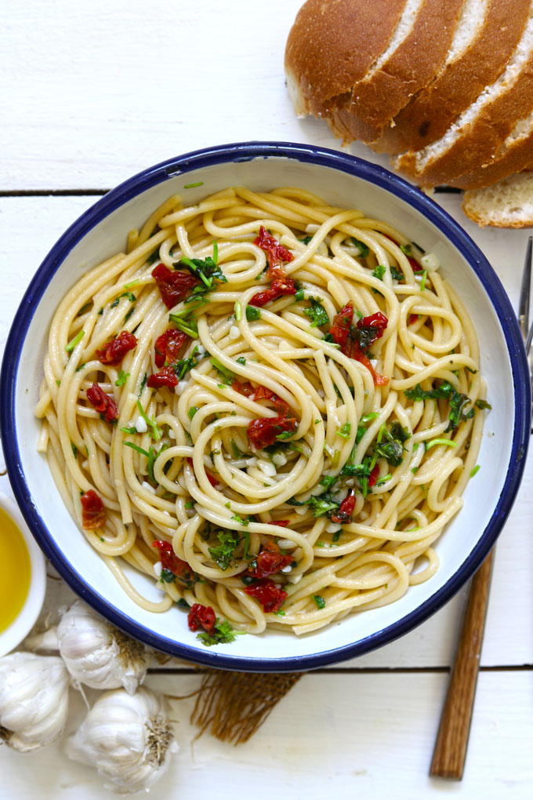

Caprese Salad

Ingredients
- 4 large ripe tomatoes, sliced 1/4 inch thick.
- 1 pound fresh mozzarella cheese, sliced 1/4 inch thick.
- ⅓ cup fresh basil leaves.
- 3 tablespoons extra virgin olive oil.
- fine sea salt and freshly ground black pepper to taste.
Steps
-
Arrange sliced ripe tomatoes and sliced mozzarella on a
platter in an alternating pattern.
-
Scatter the basil leaves over the tomatoes and mozzarella.
-
Sprinkle with a generous pinch of flaky salt and several
grinds of black pepper, to taste.
-
Drizzle 2 tablespoons extra-virgin olive oil and 2 tablespoons
balsamic glaze over the tomatoes, mozzarella, and basil. Serve
immediately.
Pan-seared Salmon

Ingredients
- 1 tablespoon extra-virgin olive oil
- ½ teaspoon kosher salt
- Freshly ground black pepper
-
4 (6-ounce) salmon fillets, 1¼ in thick (I have my fish monger
remove the skin, but it's fine to leave it on if you like)
Steps
-
Season the salmon with the salt and a few grinds of pepper.
-
Heat the oil in a 12-inch nonstick skillet over medium-high
heat until hot and shimmering.
-
Cook the salmon, without moving, skin side up, until golden
and crisp, about 4 minutes.
-
Carefully flip the fillets and reduce the heat to medium.
-
Continue cooking until done to your liking, 4 to 5 minutes
more. Transfer to a platter and serve.
Paneer Butter Masala

Ingredient Essentials
For the sauce:
- 2 large onions, thinly sliced
- 2 cloves of garlic, minced
- 2 medium tomatoes, diced
- 1 tablespoon butter
- 1 tablespoon oil
- 1 tablespoon cumin seeds
- 1 teaspoon coriander powder
- 1 teaspoon garam masala powder
- 1 teaspoon turmeric powder
- 1 teaspoon red chili powder (optional)
- Salt, to taste
- 2 tablespoons tomato puree
- 2 tablespoons heavy cream or yogurt
- Fresh cilantro, for garnish
For the paneer:
- 250 grams paneer (Indian cheese), cut into small cubes
- 1 tablespoon butter
- 1 teaspoon cumin seeds
- Salt, to taste
Steps
- Prepare the Paneer.
- Make the Sauce.
- Combine the Paneer and Sauce.
- Finish with Butter and Cilantro.
Quesadilla

Ingredients
- 8 (8-inch) flour tortillas
- 1½ cups grated sharp cheddar cheese
- 1½ cups grated Monterey Jack cheese
- ¾ cup cooked black beans, drained and rinsed
- ½ red bell pepper, stemmed, seeded, and diced
- 4 scallions, thinly sliced
- ½ cup corn kernels, thawed if frozen
- 2 jalapeño peppers, thinly sliced
For serving:
- Homemade Salsa or Salsa Verde
- Pico de Gallo
- Guacamole
Steps
- Lay the tortillas flat on a clean work surface.
-
In a medium bowl, place the cheddar and Jack cheeses and toss
to combine.
-
Sprinkle half the cheese evenly over one half of each
tortilla, leaving the other half bare. Evenly sprinkle the
black beans, red peppers, scallions, corn, and jalapeños over
the cheese. Top with the remaining cheese, then fold the bare
half of each tortilla over the fillings to create a half-moon
shape.
Spaghetti Aglio Olio

Ingredients
- Spaghetti: 12 ounces (about 340g)
- Extra virgin olive oil: 1/4 to 1/2 cup
- Garlic: 4-6 cloves, minced or thinly sliced
- Red pepper flakes: 1/4 to 1/2 teaspoon, or to taste
- Fresh parsley: 1/4 to 1/3 cup, chopped
- Salt: To taste
- Black pepper: To taste (optional)
- Parmesan cheese: For serving (optional)
- Lemon juice: 1 teaspoon, optional
- Lemon zest: 1 teaspoon, optional
-
Pasta water: 1/2 to 1 cup, reserved from cooking the pasta
Steps
-
Cook the pasta: Bring a large pot of salted water to a boil
and cook the spaghetti according to package directions until
al dente. Reserve 1/2 to 1 cup of pasta water before draining
the pasta.
-
Sauté the garlic: Heat the olive oil in a large skillet over
medium heat. Add the garlic and red pepper flakes and cook
until the garlic is lightly browned, about 30 seconds to 1
minute.
-
Add the parsley and lemon juice/zest (optional): Add the
parsley, lemon juice, and lemon zest (if using) to the
skillet.
-
Combine with pasta: Add the cooked spaghetti to the skillet
and toss to combine.
-
Adjust consistency with pasta water: Add a little of the
reserved pasta water to create a light sauce, if needed.
-
Season and serve: Season with salt and pepper to taste. Serve
with Parmesan cheese, if desired.
Vegetable Stir Fry

Ingredients
- 2 tablespoons extra-virgin olive oil
- 1 red bell pepper, stemmed, seeded, and sliced
- 1 yellow bell pepper, stemmed, seeded, and sliced
- 8 ounces cremini mushrooms, stemmed and sliced
- 3 cups small broccoli florets
- 1 cup sugar snap peas
- 1 cup thinly sliced carrots
- 3 green onions, thinly sliced
- Sesame seeds, for garnish
Stir Fry Sauce:
- ½ cup water
- ⅓ cup low-sodium soy sauce
- 1 tablespoon honey or brown sugar
- 1 tablespoon rice vinegar
- 2 teaspoons toasted sesame oil
- 2 garlic cloves, grated
- 2 teaspoons grated fresh ginger
- 1 tablespoon cornstarch
- ½ teaspoon red pepper flakes, optional
Steps
-
Make the stir fry sauce: In a medium bowl, whisk together the
water, soy sauce, honey, rice vinegar, sesame oil, garlic,
ginger, cornstarch, and red pepper flakes, if using.
-
Make the stir fry. Heat the olive oil in a large skillet or
wok over high heat. Add the red and yellow peppers, mushrooms,
broccoli, snap peas, and carrots and toss. Cook, stirring
occasionally, for 3 to 4 minutes, or until the vegetables
soften slightly.
-
Reduce the heat to medium and pour in the stir fry sauce. Stir
and cook for 1 to 2 minutes, or until the sauce thickens and
the vegetables are crisp-tender. Season to taste. Top with the
green onions and sesame seeds and serve.